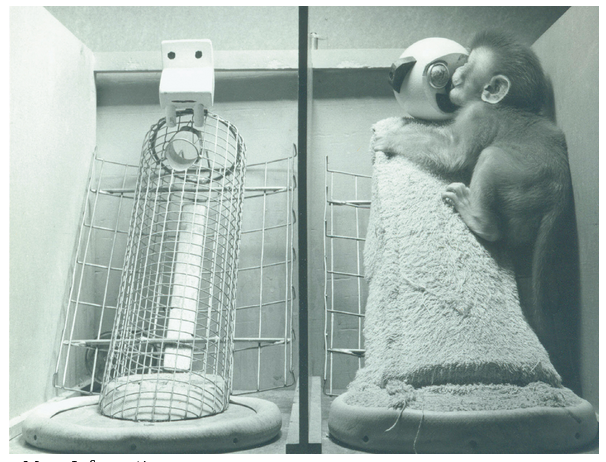
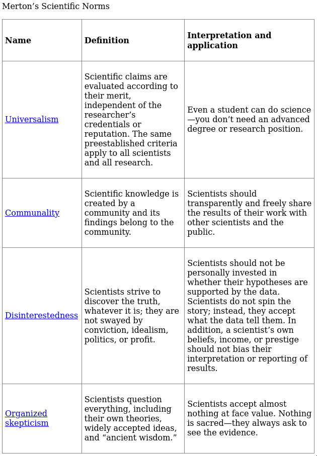
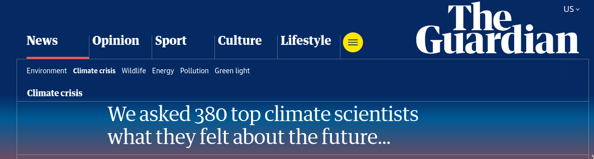

Learning Objectives
Learning Objectives
Textbook Objectives
Explain what it means to reason empirically.
Appreciate how psychological research methods help you become a better producer of information as well as a better consumer of information.
Describe five habits that define the work of scientists.
Professor’s Objectives
Establish the differences between research producers and consumers, but also their equal importance
Understand the general process of empirical research and science, and how science has “self-correcting” mechanisms
Be able to discriminate between peer-reviewed, published research, and scientific journalism
Overview
Psychology is a Science
The methods of psychological research may be different from those found in chemistry, physics, or biology - but we still follow the same principles
To be scientific, we must first be empirical, that is, to rely upon systemic and controlled observations of a phenomenon. We cannot be purely intuitive, which is to make decision off of “gut feeling”.
- But, intuition can be part of the broader scientific process
Pair and Share: What is something you “know” intuitively? You don’t have scientific evidence, but you “know” it somehow
Our scientific procedures may be compromised by confounding variables, poor ethical conduct, or limitations in design - we will discuss all of these through the semester
Different Methods, Same Answers?
There are many valid ways of conducting empirical/scientific research, many of which we will explore in this course
- Different methods may explore the same research question, but with different techniques and strengths
It is vital that you are able to both understand the methods of other researchers (consumer), and craft your own (producer)
Examples
- Observational vs. Experimental Research
- Momentary vs. Longitudinal Research
Producers and Consumers
Research Producers
- This is the process of actually planning, designing, conducting, and reporting research - using the methods we discuss in this class
- Producing research is often a requirement of advance training in psychology (e.g., M.S., Ph.D., etc.) - and also part of your undergraduate training here at GVSU (see PSY-350 and PSY-400)
- Being an author of research establishes your credibility as an expert in a certain area or topic, and advances your analytical and writing skills
- However, only one study does not make you an expert
- Research is almost always peer-reviewed, meaning it is vetted by established individuals in that discipline
Research Consumers
- Applied practitioners of psychology in businesses, clinics, and schools must understand the state of scientific literature in their respective areas.
- You will also be expected to be able to read research from journals during your training here
- It is not enough to just read research, but also to be critical and mindful of how “good” research is done.
- Just because research is “peer-reviewed” does not mean it is entirely free from limitations or problems!
- Unfortunately, some research is not properly vetted all the way
- Pair and Share: Where do we see “research” in our everyday lives? Where do we hear about statistics and surveys, etc.?
How Scientists Work
Empiricism
Scientists (and psychologists) are empiricists that assess phenomena through rigorous and systemic thinking, testing, and writing
We may use evidence from our senses, or from measurement tools to establish the properties and behaviors of a certain idea
- Not all procedures for measuring or operationalizing are built equal, and some may be more reliable and valid than others
- How do you find better measures? Read more research (consumer-role)!
- We will talk more on this later
The Theory-Data Cycle
- Part of science is not just establishing theories and ideas, but updating them as new evidence supports or contrasts existing frameworks
- In order to do so, we must make specific hypotheses to test, and then report on the results of said testing
- Effectively we move from Theory to Hypothesis to Data, back to Theory
- There are many good, relevant examples of this in modern research, but take the legacy example of Harlow’s monkeys…
Harlow’s Monkeys
How do we test a component of primate attachment theory? We must perform an empirical experiment!
This also shows an important feature of good research - we must be willing to be wrong!

Theories
These are general statements or concepts about how a certain phenomena is believed to behave. They are often multifaceted and expand over time as further information adds to and subtracts from understanding of a certain construct
These theories, oftentimes, try to describe some interaction of two or more constructs, whether that be a monkey and a figurine; or a person and a treatment
Most theories try to follow the rule of parsimony, that is, trying to fit the simplest-possible explanation for a phenomenon or observed behavior.
- Note: not all things can be fully “simplified”, but we seek the most basic explanation we can
Hypotheses
These are much more specific statements that often serve as the foundation for any particular study. They should be pre-registered - and stated prior to the actual commencement of the planned study. Making hypotheses after a study, to fit the data, is unethical (we will later touch on this issue)
These may be made within the context of a broader theory, but are likely to focus more concretely on a predicted outcome (that could be wrong!)
Several studies, led by several hypotheses, may all contribute to the development of a grander theory
Data
Data is the output of an experiment or study, and contains the observations that either support of refute the hypothesis, which aids in understanding the theory
Try to really internalize this graphic, as it really is the framework by which all research is created
Example: “Learning styles” matching

Burden of Proof
A singular study does not definitively prove a certain hypothesis or theory, nor can it fully disprove these. Rather, it may add to evidence for or against a certain idea.
Example in writing: “This paper aids in understanding how CBT-I may be beneficial for individuals with depression. Results indicate a moderate effect of the treatment in reducing depression in the present study. Future research is needed to clarify the effect in different populations and contexts.”
Put statistically: we never prove or disprove our null hypothesis (\(H_0\)), we just supply evidence for or against our alternative hypothesis (\(H_1\))
Only once many studies have provided support for a theory, can we say the weight of evidence is in favor of it.
We Can be Wrong
Falsifiability: Good research must allow for our theory and/or hypothesis to be flawed or erroneous. If this is not accounted for, we engage in confirmation bias, or effectively choosing to only investigate for our views.
- Recall the Theory-Hypothesis-Data flowchart from earlier. Revision is a valid outcome of new data!
It is critical that our design, statistics, and reporting make clear the possibility that a study is limited in it’s scope and abilities
No one study is so perfectly designed that it can account for all edge cases in a phenomena
Norms for Scientific Research
Understand the table and terms on pg 16. of your textbook! These are some “rules to live by” for conducting good scientific work
This is only the tip of the iceberg - we will be covering the great many topics that discuss the “how to” of research methods

Continuum of Research Contexts
- Basic Research is that done for theoretical purpose to expand knowledge or fundamental ideas
- Example: electrodes and brain waves during a certain activity
- Translational Research is done in a more controlled environment, but now being applied to real people (or animals)
- Example: lab experiment study of peoples reaction to a certain stimulus
- Applied Research happens moreso in the “real world” where the findings from basic and translational research are applied to less-controlled contexts.
- Example: Retrospective study on patient outcomes after a certain treatment
- ALL forms of research here are useful and important in the development of well-rounded and well-supported theories!
“Publicly” Available Research
Scientists communicate primarily through publishing findings in academic journals that use a system of editors and peer reviewers to ensure the rigor and validity of a study
If a paper is published, it may be cited by future scientists in support of certain claims and arguments in papers, presentations, and reports. Or, others can also disagree and provide competing evidence in their own work.
- A theory is not crafted from the work of just one author, but instead the synthesis of many different published articles
Journals may range in quality and rigor though - not all are equal! We will discuss some nuances in this later in the semester.
Also, some journals may be difficult to access - we will have a lit review workshop where we cover how to find the full PDF articles of research studies
Scientific Journalism
Specialized journalists often try to bring scientific findings (published in journals) to a medium that is more acceptable to laypeople.
However, these writings are not peer-reviewed the same as the original research - and may overstate, understate, or be reductive towards the “true” findings
When in doubt -> always go to the original publication!!
- Note: citing journalism about a study, rather than the study itself, may be improper attribution
